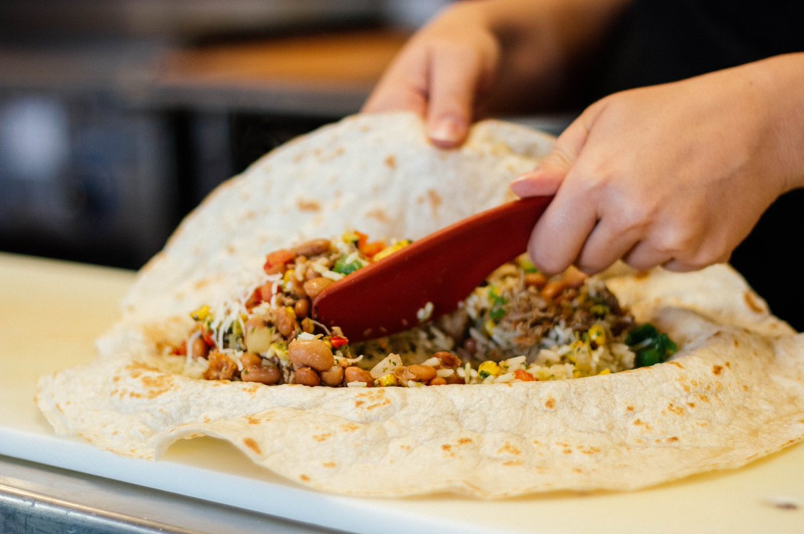
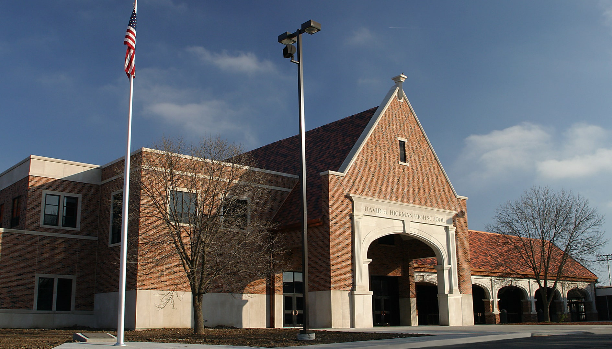

Experience
I've worked two jobs before, once in food service as a shift leader at Pancheros and as a customer service representative at Central Bank. Both jobs were great learning experiences, but I was studying to be a web developer the whole time I was working at either job.
Education
I went to high school at Hickman High School, graduating class of 2016. In my senior year is when I developed my interest for web development, and so I feel that I owe a lot to that last year for guiding me in this direction.
After gradutation I went to Moberly Area Community College for two years, and I am currently enrolled in Columbia College to finish my Assiocate of Arts degree.